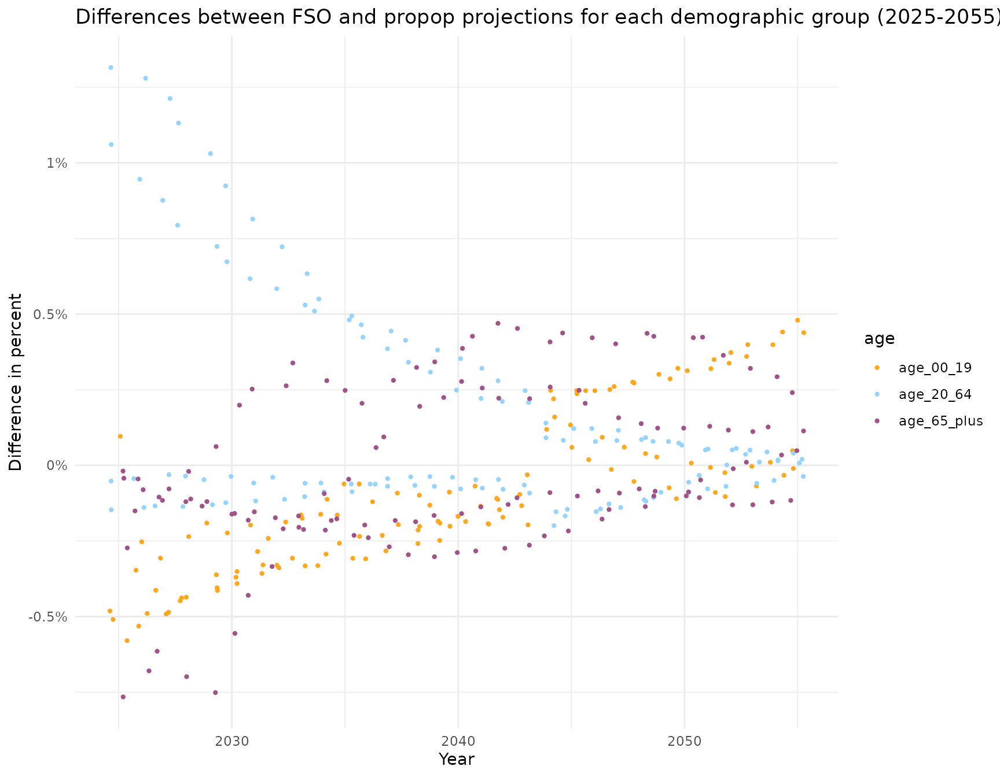

Evaluate projections
propop provides a function to compare
projections against a benchmark. The benchmark can be the
actual (recorded) population development (i.e., official records in
population registry) or a base model (e.g., when testing alternative
models or when comparing against the official FSO forecast).
Evaluations can be carried out individually per observation unit or like a summary statistics aggregated across observations (e.g., all years, demographic groups, spatial units).
Get the data
To run the evaluation function, we need some benchmark data and the results from the projection. An interesting possibility is to compare real, observed data to predicted data. Because FSO’s projection scenarios have just been published, there aren’t any observed data available yet.
This example therefore uses older data and parameters from the previous FSO model. That is, we run a model with the population from 2018 as starting population and the population records from 2019-2022 as benchmark data.
data_benchmark <- get_population(
number_fso = "px-x-0102010000_101",
year = 2018,
year_last = 2022,
spatial_units = "- Aargau"
)Get the parameters for the projection (note that these parameters aren’t available anymore; i.e., this code will fail from 2025 onwards if you try it for the years 2019-2050):
data_parameters <- get_parameters(
year_first = 2019,
year_last = 2050,
spatial_units = "Aargau"
)Run the population projection for 2019-2022:
data_projected <- propop(
parameters = data_parameters,
year_first = 2019,
year_last = 2050,
scenarios = "reference",
age_groups = 101,
fert_first = 16,
fert_last = 50,
share_born_female = 100 / 205,
# population records from 2018 as starting point
population = data_benchmark |>
dplyr::filter(year == 2018),
subregional = FALSE,
binational = TRUE
)Evaluate 1-year age classes
Evaluation of observation units
Let’s first compare the projected population growth against the
recorded population development (= benchmark) using one-year age classes
(default option). Make sure to provide matching data frames, especially
in terms of the year ranges and spatial units. To remove the starting
population (2018) from the projection results, you could also use
drop_start_year = TRUE.
As a result of prepare_evaluation(), you get the
recorded (n_bench) and projected (n_proj)
population for each demographic group and year as data frame columns
next to each other:
# Combine and pre-process the data
combined <- prepare_evaluation(
# only keep years from projected period
data_benchmark = data_benchmark |> dplyr::filter(year > 2018),
n_benchmark = "n",
data_projected = data_projected |> dplyr::filter(year > 2018 & year <= 2022),
n_projected = "n_dec"
)
# Show combined data
combined
#> # A tibble: 1,616 × 7
#> year spatial_unit nat sex age n_benchmark n_projected
#> <int> <chr> <chr> <chr> <dbl> <dbl> <dbl>
#> 1 2019 Aargau ch m 0 2622 2510.
#> 2 2019 Aargau ch m 1 2593 2551.
#> 3 2019 Aargau ch m 2 2635 2631.
#> 4 2019 Aargau ch m 3 2596 2609.
#> 5 2019 Aargau ch m 4 2683 2670.
#> 6 2019 Aargau ch m 5 2737 2738.
#> 7 2019 Aargau ch m 6 2636 2633.
#> 8 2019 Aargau ch m 7 2609 2594.
#> 9 2019 Aargau ch m 8 2642 2632.
#> 10 2019 Aargau ch m 9 2657 2654.
#> # ℹ 1,606 more rowsBased on the difference between the observed and projected number of
people, compute_measures() then calculates the error and
several performance metrics:
evaluation_1 <- compute_measures(combined)
#> Warning message:
#> The following columns of the output have missing values:
#> ! "pe" and "ape".
#> ℹ Missing values are likely to lead to biased evaluation
#> measures that cannot be properly interpreted.
# Create table
evaluation_1 |>
# select demographic group
dplyr::filter(sex == "m" & nat == "ch" & age == 27) |>
# round to two digits
dplyr::mutate(across(pe:ape, \(x) sprintf(fmt = "%.2f", x))) |>
DT::datatable(
filter = "none",
options = list(dom = "t"),
caption = htmltools::tags$caption(
style = "caption-side: top; text-align: left; font-weight: bold",
"Performance measures for projections with 1-year age classes for the
canton of Aargau 2019-2022; only one demographic group is displayed."
)
)Aggregated evaluation
To obtain summary statistics for the whole projection model, you can
use the aggregate_measures() function:
aggregate_measures(evaluation_1) |>
# round to two digits
dplyr::mutate(across(mpe:ape_under_5, \(x) sprintf(fmt = "%.2f", x))) |>
DT::datatable(
options = list(dom = "t"),
caption = htmltools::tags$caption(
style = "caption-side: top; text-align: left; font-weight: bold",
"Evaluation measures of projection with one-year age classes, aggregated
across all observations."
)
)
#> Warning message:
#> The following columns in `data` have missing values:
#> ! "pe" and "ape".
#> ℹ Missing values may lead to inaccurate evaluation
#> measures.Evaluate larger age groups
One-year age classes often lead to small group sizes. This is particularly problematic when the benchmark is equal to 0; then some measures may be inaccurate.
A solution to this problem is to use larger age groups that contain several years.
Evaluation of observation units
Instead of using one-year age classes, you can conduct the evaluation
for the commonly used age groups 0-19 year olds, 20-64 year olds, and
over 64 year olds using the option
age_groups = "age_groups_3".
# Combine and pre-process the data
combined_grouped <- prepare_evaluation(
# only keep years from projected period
data_benchmark = data_benchmark |> dplyr::filter(year > 2018),
n_benchmark = "n",
data_projected = data_projected |> dplyr::filter(year > 2018 & year <= 2022),
age_groups = "age_groups_3",
n_projected = "n_dec"
)
# Show combined data
combined_grouped
#> # A tibble: 48 × 7
#> year spatial_unit age sex nat n_benchmark n_projected
#> <int> <chr> <chr> <chr> <chr> <dbl> <dbl>
#> 1 2019 Aargau age_00_19 f ch 49279 49129.
#> 2 2019 Aargau age_00_19 f int 17818 18118.
#> 3 2019 Aargau age_00_19 m ch 52389 52076.
#> 4 2019 Aargau age_00_19 m int 19323 19566.
#> 5 2019 Aargau age_20_64 f ch 151860 151781.
#> 6 2019 Aargau age_20_64 f int 56115 56380.
#> 7 2019 Aargau age_20_64 m ch 149279 149263.
#> 8 2019 Aargau age_20_64 m int 66770 67029.
#> 9 2019 Aargau age_65_plus f ch 59729 59846.
#> 10 2019 Aargau age_65_plus f int 6311 6332.
#> # ℹ 38 more rows
# Compute the performance measures
evaluation_2 <- compute_measures(combined_grouped)
evaluation_2 |>
# select demographic group
dplyr::filter(sex == "m" & nat == "ch" & age == "age_20_64") |>
# round to two digits
dplyr::mutate(across(pe:ape, \(x) sprintf(fmt = "%.2f", x))) |>
DT::datatable(
options = list(dom = "t"),
caption = htmltools::tags$caption(
style = "caption-side: top; text-align: left; font-weight: bold",
"Performance measures for projections with three age classes for the
canton of Aargau 2019-2022; only one demographic group is displayed."
)
)Aggregated evaluation
You can again use aggregate_measures() to obtain a
summary of the evaluation across all observations:
aggregate_measures(evaluation_2) |>
# round to two digits
dplyr::mutate(across(mpe:ape_under_5, \(x) sprintf(fmt = "%.2f", x))) |>
DT::datatable(
options = list(dom = "t"),
caption = htmltools::tags$caption(
style = "caption-side: top; text-align: left; font-weight: bold",
"Evaluation measures for projection with three age classes, aggregated
across all observations."
)
)Using group weights
Evaluation of observation units
Furthermore, you can use weights. When using the weighted metric,
adjusted absolute percentage errors weigh less heavily in smaller groups
than in larger groups. The adjusted metric w_ape considers
that smaller groups tend to have larger forecast errors.
This is illustrated in the following table: The unweigthed percentage
errors (ape) 0.39/0.36 become 0.24/0.07 when they are
weighted by the total number of people per group
(w_ape).
evaluation_3 <- compute_measures(combined_grouped, weight_groups = c("age"))
evaluation_3 |>
dplyr::filter(year == 2019 & ape > .34 & ape < .39) |>
dplyr::mutate(across(pe:w_ape, \(x) sprintf(fmt = "%.2f", x))) |>
DT::datatable(
options = list(dom = "t"),
caption = htmltools::tags$caption(
style = "caption-side: top; text-align: left; font-weight: bold",
"Selected results showing the effect of using weights
(ape versus w_ape)."
),
) |>
DT::formatStyle(
columns = c("ape", "w_ape"),
backgroundColor = "#96D4FF"
)Aggregated evaluation
You can also use aggregate_measures() to obtain a
summary of the evaluation with weighted groups:
propop versus FSO
Instead of comparing the propop projection with population records,
we can also use the evaluation function to check how close the
propop projection comes to FSO’s projection from the 2025
model.
projection_2025 <- propop(
parameters = fso_parameters,
year_first = 2025,
year_last = 2055,
scenarios = "reference",
age_groups = 101,
fert_first = 16,
fert_last = 50,
share_born_female = 100 / 205,
# population records from 2018 as starting point
population = fso_population,
subregional = FALSE,
binational = TRUE
)
#>
#> ── Running projection for 3 scenario(s). ───────────────────────────────────────
#> ℹ Process...
#> ✔ Processing completed in [9.2s]
#>
#> ── Settings used for the projection ────────────────────────────────────────────
#> Scenario(s): "reference"
#> Year of starting population: 2024
#> Number of age groups: 101
#> Fertile period: 16-50
#> Share of female newborns: 0.488
#> Size of starting population: 735808
#> Projection period: 2025-2055
#> Nationality-specific projection: "yes"
#> Subregional migration: "yes"
#> ────────────────────────────────────────────────────────────────────────────────
#> Projected population size by 2055:
#> - Scenario "reference": 893942
#> ════════════════════════════════════════════════════════════════════════════════
#>
#> ── Please note ─────────────────────────────────────────────────────────────────
#> ℹ As of propop v2.0.0, propop() uses tables instead of matrices to calculate projections.
#> ℹ The old function is still available as propop_legacy() but won't be further maintained.
#> ════════════════════════════════════════════════════════════════════════════════
fso_propop <- prepare_evaluation(
data_benchmark = fso_parameters |>
dplyr::filter(scen == "reference" & year > 2023) |>
dplyr::mutate(n = fso_projection_n),
n_benchmark = "n",
data_projected = projection_2025 |>
dplyr::filter(year > 2023),
age_groups = "age_groups_3",
n_projected = "n_dec"
) |>
compute_measures()
fso_propop |>
dplyr::mutate(across(pe:ape, \(x) sprintf(fmt = "%.3f", x))) |>
DT::datatable(
filter = "top",
caption = htmltools::tags$caption(
style = "caption-side: top; text-align: left; font-weight: bold",
"Comparison of projetions from FSO versus `propop`."
)
)
In the example data, the differences are as much as 30 person per demographic group and year. The main reason for these differences is that FSO uses a different starting population, which mainly differs for newborns and old people.
When using the exact same starting population, which is not publicly available, the largest difference between the FSO projections and those from {propop} is just one person per demographic group and year (across all 404 demographic groups and 31 years).